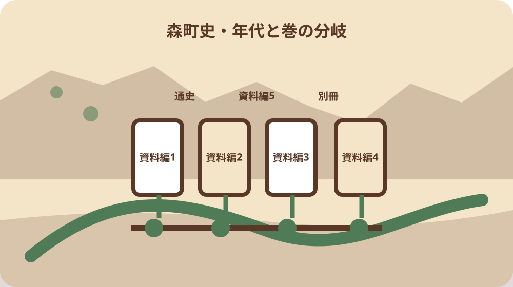
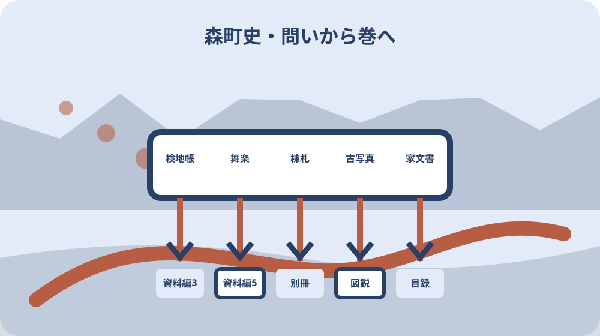

先に結論を確認する
この記事の答え：問いの年代と欲しい資料種別を一つずつ決めます。大きな流れを読むなら通史編、考古・古代中世・近世・近現代の原資料へ進むなら資料編1〜4、祭礼や民俗なら資料編5、棟札や石造物の銘なら別冊、写真と図で候補を絞るなら図説、特定の古文書群を探すなら古文書目録1〜12を第一候補にします。
森町で最初に照合する条件：最初に問いの年代を『先史・考古』『古代・中世』『近世』『近現代』『年代横断』のどれか一つへ仮置きする。
年代と資料種別の二軸で最初の一冊を決める
森町史を調べるときの最初の作業は、地区名をいくつも増やすことではありません。問いの年代を一つ、欲しい資料種別を一つ選び、その交点から最初に開く巻を決めます。本稿の成果物は、森町史の内容を要約した年表ではなく、通史上下、資料編1〜5と別冊、図説、古文書目録1〜12へ振り分ける巻別ルーティング表です。
年代欄は、先史・考古、古代・中世、近世、近現代、年代横断の五区分にします。資料種別欄は、歴史叙述、原資料・翻刻、祭礼・民俗、棟札・銘文、写真・図、古文書群の所在目録の六区分です。問いが二つの年代にまたがる場合も、まず中心年代を一つ選び、隣接年代は第二候補へ回します。
例えば『大鳥居の慶長期検地帳を見たい』なら、年代は近世、資料種別は原資料・翻刻なので資料編3が第一候補です。森町公式の検地解説も、大鳥居村と山方の検地帳の出典を資料編三と示しています。これは、町の解説から巻へ戻る具体的なルートとして使えます。
一方、『明治の製茶業がどう変化したか』は近現代でも、流れを読みたいなら通史編下巻、当時の記録を読みたいなら資料編4です。同じ年代でも答えの形によって入口が違います。ルーティング表には、問い、中心年代、欲しい資料種別、第一候補、第二候補、選択理由の六列だけを置きます。
通史編と資料編を問いの答え方で分岐する
通史編を先にするのは、出来事の原因、展開、前後関係を文章でつかみたい場合です。個別資料の文字面だけでは分かりにくい時代背景や制度の変化を、章と節のまとまりで読む入口になります。問いの語尾が『なぜ』『どのように変わったか』『町全体ではどう位置づくか』なら、通史側に印を付けます。
資料編を先にするのは、遺物、文書、記録、図版など、根拠となる資料そのものへ近づきたい場合です。問いの語尾が『どの資料にあるか』『原文ではどう記されるか』『どの遺跡・文書が採録されるか』なら資料編側です。資料編1〜4は主に年代、資料編5と別冊は資料の性格で選びます。
同じ『祭り』でも、森町地域社会の中での意味を読むなら通史編下巻、舞楽や民俗芸能の資料を探すなら資料編5、社殿の棟札や奉納物の刻銘を探すなら別冊です。主題語だけでは一冊に決まりません。欲しい答えが叙述、芸能資料、銘文のどれかを選んで初めて分岐します。
ルーティング表では一つの問いに第一候補を一冊だけ記入します。通史と資料編を同列に並べると、結局どれから開くか決まりません。第一候補を選んだ理由を二十字程度で書き、第二候補は第一候補で不足する答えの種類を補う巻に限定します。
通史編上巻と下巻を年代・主題で切り替える
国立国会図書館の書誌は通史編上巻を1996年3月刊、1005ページとしています。上巻を選ぶ条件は、近代以前を中心とする町の歴史的展開を文章で追いたいことです。考古・古代・中世・近世の個別資料をすぐ読むのではなく、時代の連続を先に把握したい問いを上巻へ送ります。
静岡県立中央図書館の書誌は通史編下巻を1998年3月刊、969ページとし、目次に第五編『近代の森』、第六編『現代の森』、第七編『森の民俗と芸能』、第八編『森町の文化財』を掲げています。明治以後の社会、産業、学校、戦争、戦後、祭礼、文化財の位置づけを文章で読む問いは下巻が第一候補です。
祭礼や文化財は年代だけで上下巻を分けにくいため、下巻の目次構成を優先します。舞楽、田遊び、森の祭り、建造物、美術工芸品、史跡・名勝・天然記念物といった主題が下巻にまとまるからです。ただし資料そのものが必要なら、下巻を背景説明、資料編5や別冊を第二段階にします。
上下巻を取り違えないため、ルーティング表の通史欄には単に『通史』と書かず、『上巻・近代以前の流れ』または『下巻・近代以後／民俗／文化財』と書きます。刊行年とページ数も併記すれば、書誌検索で同名の別自治体史を開く誤りを防げます。
資料編1考古は遺跡・遺物・発掘地点へ送る
資料編1の巻名は『考古』です。国立国会図書館の正式書誌では1998年3月刊、466ページ、静岡県立中央図書館の目次では森町の考古学研究、考古資料、遺跡と遺物が主要な章です。土器、須恵器、古墳、横穴、経塚、発掘地点など、物質資料と遺跡を起点にする問いをここへ送ります。
『縄文時代の三倉を知りたい』という広い問いでも、欲しいものが通史的な説明なら通史編上巻です。特定遺跡の採録、出土遺物、資料細目次を確認したいなら資料編1になります。年代が古いという理由だけで資料編1を選ばず、考古資料を求めているかを分岐条件にします。
県立図書館の目次には、丈岩、田能、旧三倉小学校校庭、院内古墳群など多数の遺跡名が資料細目次として並びます。したがって、問いに遺跡名や出土品名が含まれる場合は資料編1の優先度が上がります。寺社の創建伝承や中世文書を探す問いは、同じ古い年代でも資料編2へ回します。
ルーティング表の選択理由には『先史だから』ではなく、『遺跡・遺物の採録を探すため』と記します。第二候補は、その遺跡を地域史の流れへ置きたい場合だけ通史編上巻です。図説の考古関係項目は候補地点を写真や図で見分ける補助入口にします。
資料編2古代・中世は文書史料と中世世界へ送る
国立国会図書館の正式書誌は資料編2の各巻名を『古代・中世』とし、1994年3月刊、505ページと記録しています。律令、一宮、荘園、鎌倉・室町期、国人領主、寺社の古代中世史料を確かめたい問いは資料編2が第一候補です。
資料編1との境界は、物として残る遺跡・遺物を中心にするか、古代・中世の文書や記録を中心にするかです。経塚から出た遺物の資料細目なら資料編1、その経塚や寺社を古代末・中世の文脈で記す史料なら資料編2というように、欲しい証拠の形で分けます。
図説森町史の目次には、律令国家と森、一宮の成立と密教の隆盛、飯田荘と都うつし、鎌倉時代の森、蓮華寺と一宮の鋳物師、国人領主天方道芬などが並びます。これらのウェブ項目で問いの時代と人物を確かめ、史料へ進みたいときの第一候補を資料編2にします。
通史編上巻との分岐はここでも同じです。荘園や領主の展開を連続した説明で読むなら上巻、記載された古代・中世史料を確かめるなら資料編2です。ルーティング表には『古代中世』だけでなく、『文書史料を求める』という選択理由を残します。
資料編3近世は検地・村・年貢・領主へ送る
国立国会図書館の書誌は資料編3を『近世』、1993年3月刊、802ページとしています。江戸期の村、検地、年貢、領主支配、村絵図、街道、産業などを原資料に近い形で確かめる問いは、この巻を第一候補にします。
森町公式『森地域の検地と年貢』は、森地域で残る検地帳を一覧にし、大鳥居村と山方の検地帳について『森町史』資料編三を出典として示しています。したがって『慶長期の大鳥居村検地帳』のように資料名まで分かる問いは、通史編を経由せず資料編3へ直接送れます。
近世という年代だけでは不十分です。『江戸時代に森の村がどう変わったか』なら通史編上巻が先で、『特定村の検地帳や年貢資料を確認したい』なら資料編3が先です。問いに村名、文書名、年号、差出人など具体的な史料要素があるほど、資料編3の優先度が上がります。
棟札や石造物の銘に江戸年号がある場合は、近世だから資料編3と自動判定しません。資料種別が銘文なら別冊が第一候補です。年代軸より資料種別軸を優先する例として、ルーティング表に『江戸期の棟札→別冊、江戸期の村方文書→資料編3』と対で載せます。
資料編4近現代は明治以後の記録へ送る
国立国会図書館の正式書誌は資料編4の各巻名を『近現代』とし、1995年3月刊、別冊を含む二冊としています。明治以後の行政、学校、産業、交通、戦争、戦後の記録など、近現代の一次資料を求める問いをこの巻へ送ります。
資料編4が二冊構成である点は、書誌を特定するときに重要です。『資料編4』だけを記録すると、本体と別冊のどちらを見たか分からなくなります。ルーティング表には『資料編4近現代・本体／別冊の確認要』と書き、現物の巻表示で対象を確定する欄を設けます。
通史編下巻も近代・現代を扱いますが、役割は異なります。明治維新後の社会変化や戦後の町づくりを章の流れで読むなら下巻、当時の文書や記録へ進むなら資料編4です。『何が起きたかを読む』と『何に記されたかを確かめる』を分岐文にします。
近現代の祭礼写真、学校写真、産業写真だけを探すなら、図説の該当項目を先に開く場合もあります。写真で場所や主題を絞ることが目的なら図説、文字資料へ進むことが目的なら資料編4です。写真があるという推測だけで資料編4へ送らないようにします。

資料編5は舞楽・民俗芸能・暮らしへ送る
国立国会図書館の書誌は資料編5を『舞楽・民俗芸能・民俗資料』とし、1996年3月刊、1130ページと図版24枚を記録しています。小國神社・天宮神社・山名神社の舞楽、田遊び、祭礼、年中行事、生業、衣食住などを資料として確かめる問いは資料編5が第一候補です。
この巻は年代で切る巻ではありません。舞楽の起源から現代の継承までのように複数時代へまたがっても、資料種別が民俗芸能なら資料編5へ送ります。年代欄は『年代横断』、資料種別欄は『祭礼・民俗』とすることで、資料編3や4への誤配を避けます。
通史編下巻の目次にも森の祭り、舞楽、田遊びと神楽舞が含まれます。祭礼が地域社会でどう位置づけられるかを読みたいなら下巻、演目、用具、伝承、民俗記録へ進みたいなら資料編5です。答えが説明文か資料群かを先に決めます。
祭礼に関係する社殿の建立年、棟札、石碑、奉納物の銘が目的なら別冊へ分岐します。同じ神社名でも、舞そのものは資料編5、建物や奉納物に残る文字は別冊です。ルーティング表では神社名ではなく、舞・用具・聞き取り・棟札・銘のどれを求めるかで選びます。
資料編別冊は棟札・金石文・銘文へ送る
国立国会図書館と静岡県立中央図書館の書誌は、資料編別冊の題名を『森町の棟札・金石文』、1998年3月刊、436ページとしています。建物の棟札、墨書、木彫銘、金属製品、瓦、石造品など、物に記された文字を探す問いは別冊を第一候補にします。
県立図書館の目次は、棟札と大工の活動、墨書・漆書・木彫銘、金属製品、瓦製品、石造品という分類を示しています。さらに宮荘、国衙領、飯田荘、三倉郷などの区分と地区名が並びます。地区名と資料種別の両方が分かる問いほど、別冊の郷村別一覧へ直行できます。
『天宮神社の江戸期を調べる』だけなら通史編上巻や資料編3も候補です。しかし『天宮神社の棟札にある年号と大工名』なら別冊です。年代よりも物に残る銘を求めるという条件が強いため、近世資料編より別冊を先にします。
別冊は建物の歴史全体を自動的に確定する本ではありません。本稿ではその注意を一般的な権利論へ広げず、巻選択に限定します。棟札・金石文・墨書・瓦銘・石塔銘という語が問いに入れば別冊、建築様式の概説を読みたいなら通史編下巻の文化財編という分岐です。
図説森町史は50項目から本編候補を試し読みする
森町公式の図説森町史は、森町の歴史や出来事を写真や図とともに紹介し、自然から史跡・名勝・天然記念物まで五十項目をウェブ目次に並べています。年代も資料種別もまだ曖昧な問いは、図説を第一候補にして主題を絞ります。
図説の目次は、考古、古代中世、近世、近現代、舞楽、祭り、年中行事、生業、民家、神社建築、寺院建築、彫刻、絵画、工芸品・書跡・古文書へ連続します。該当項目が1〜27なら通史上巻や資料編1〜3、28〜34なら下巻や資料編4、35〜43なら下巻や資料編5、44〜50なら下巻文化財編や別冊を次候補にできます。
この番号対応は巻の目次そのものではなく、本稿のルーティング規則です。図説項目を読んで、知りたいのが歴史の流れか、原資料か、芸能資料か、銘文かを再判定します。図説だけで完了とせず、第二候補の巻名と選択理由を表へ移します。
森町はウェブ版図説が1999年2月発行時の情報を用い、最新情報と異なる場合があると注意しています。本稿でこの注意を使う範囲は、図説を現況案内ではなく巻選択の入口とすることです。略年表三区分も、年代欄を仮置きする補助として使います。
古文書目録1〜12は資料群を探す別ルートに置く
国立国会図書館サーチAPIの正式書誌には、『静岡県周智郡森町所在古文書目録』第1集から第12集までが個別に収録されています。第1集は1988年、第12集は1996年です。通史や資料編の内容を読むのではなく、特定の家・組織・資料群の目録を探す問いだけをこのルートへ送ります。
静岡県立中央図書館の書誌は、第5集を1990年刊、221ページ、第11集を1995年3月刊、255ページとしています。どちらも分類はS025です。この二例だけでも、集番号が年代区分やページ順を意味するとは限らず、各集が独立した書誌であることが分かります。
『江戸期の文書だから第3集』のような番号推測はしません。第1〜12集は刊行物の連番であり、問いの年代をそのまま集番号へ置換できないからです。第一候補欄にはまず『古文書目録群』と書き、正式書誌と現物の凡例・目次で資料群を確認した後に集番号を確定します。
資料編3と古文書目録の分岐は、採録された近世史料を読むか、ある資料群に何が含まれるかを探すかです。前者は資料編3、後者は古文書目録です。目録で文書名が見つかった後の閲覧記録や請求記号管理は既存の郷土資料記事へ渡し、本稿では巻選択までで止めます。

大石の視点：巻別ルーティング表を具体例で完成させる
ここまで示した巻名、刊行年、ページ数、目次構成は、公的機関の書誌や森町公式ページで確認できる事実です。ここからの第一候補・第二候補の置き方と表の完成条件は、その事実を調査の順番へ変換するための大石の実務提案です。各巻が特定の問いに唯一の正解だと公的資料が指定しているわけではありません。
大石の視点で置く一行目の例は『院内古墳の出土遺物』です。中心年代は先史・考古、資料種別は遺跡・遺物、第一候補は資料編1、第二候補は通史編上巻、理由は『資料細目から遺跡と遺物を確認する』とします。写真で地点を先に見たい場合だけ図説を第一候補へ入れ替える、という順序も実務上の提案です。
二行目の『慶長期の大鳥居村検地帳』は資料編3を第一候補、通史編上巻を第二候補にします。森町公式が検地帳の出典を資料編三と示すことは公的事実ですが、先に資料編3を開く順番は大石の判断です。同様に『明治の学校制度の変化』は、叙述を求めるなら通史編下巻、学校記録そのものを求めるなら資料編4へ分けます。
表の完成条件は、すべての問いに第一候補が一つあり、その理由を年代と資料種別の両方で説明できること、と大石は考えます。『森町史全部』『郷土資料全般』という広すぎる行は残しません。通史上下、資料編1〜5、別冊、図説、古文書目録群のうち問いに合わない入口を減らし、最初に開く一冊を選べた時点でルーティングを終えます。